Context
Projects gives the page a specific angle instead of repeating the navigation label.
Work / 01
Work opens as a clear personal brands decision hub: what Brand offers, who it helps, why it matters, and which route to take first.
The first screen combines positioning, proof, primary action, and fast internal navigation, so people can act immediately or compare the rest of the work route with context.
Editorial author hero
Select the closest route and Brand keeps the next step, proof, and follow-up expectation aligned with authority and booking confidence.
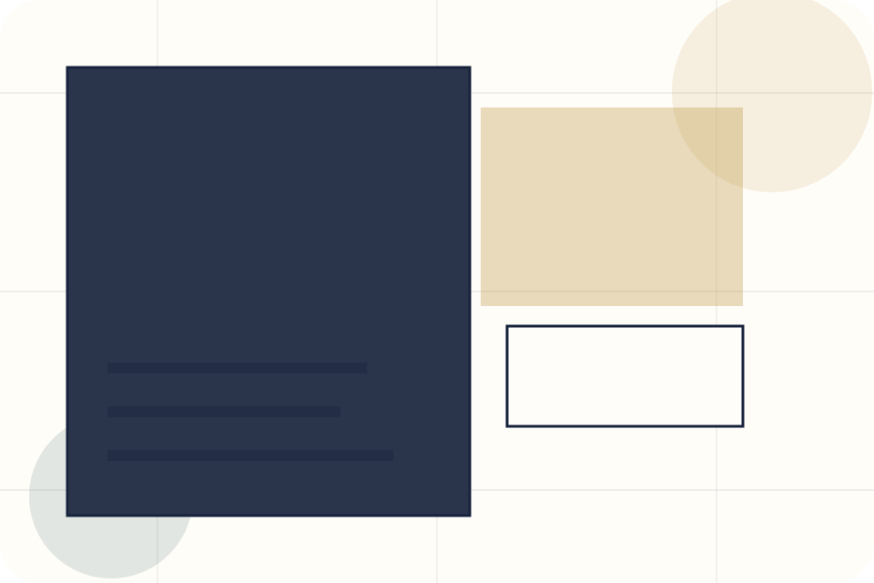
Work / 02
Projects adds editorial context to the work route, using the author essay and media system structure to support authority and booking confidence before visitors choose a next step.
Brand uses essay media cards and focused copy to make the decision easier to scan, aligning the section with authority and booking confidence rather than filling space.
Explore Work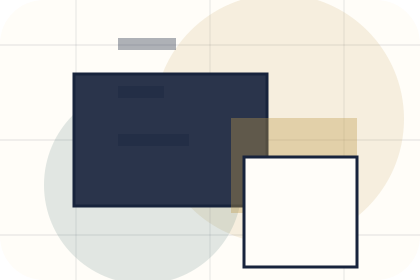
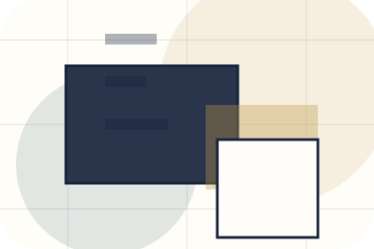
Projects gives the page a specific angle instead of repeating the navigation label.
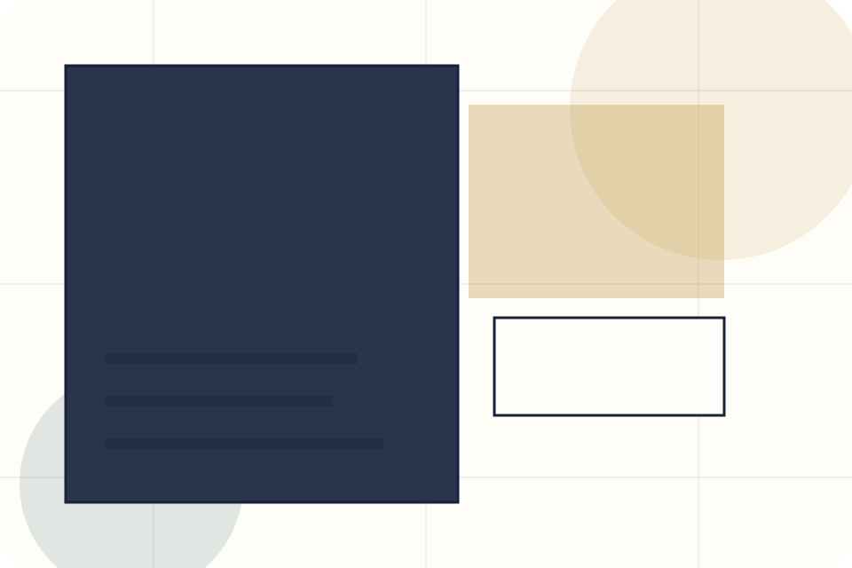
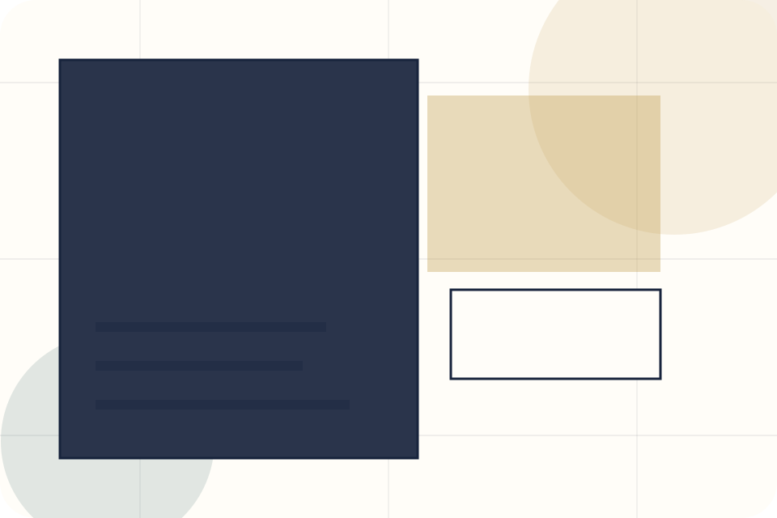
Work / 03
Services explains the practical scope, best-fit situations, and expected outcome so personal brands visitors can compare options without decoding jargon.
The section keeps the offer concrete: what is included, who it is best for, what decision it supports, and which linked route gives the deeper detail.
Explore WorkWho should use services and when it belongs in the work journey.
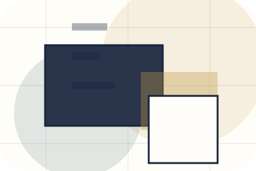
The practical benefit visitors should expect after choosing this route.
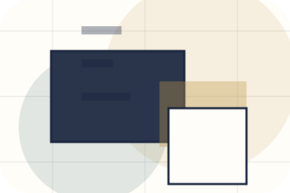
Where to compare details, pricing, support, or contact options before committing.
Editorial author hero
Select the closest route and Brand keeps the next step, proof, and follow-up expectation aligned with authority and booking confidence.
Work / 04
Collaborations adds editorial context to the work route, using the author essay and media system structure to support authority and booking confidence before visitors choose a next step.
Brand uses essay media cards and focused copy to make the decision easier to scan, aligning the section with authority and booking confidence rather than filling space.
Explore WorkCollaborations gives the page a specific angle instead of repeating the navigation label.
The essay media cards show what to compare, what to avoid, and what matters most for personal brands, creators & public figures visitors.
The final cue points to a useful internal route so the section keeps the journey moving.
Work / 05
Highlights adds editorial context to the work route, using the author essay and media system structure to support authority and booking confidence before visitors choose a next step.
Brand uses essay media cards and focused copy to make the decision easier to scan, aligning the section with authority and booking confidence rather than filling space.
Explore WorkBrand structures highlights around context, judgment, and a clear next route so visitors can compare the block quickly before they book an appearance.
Book AppearanceWork / 06
Cases shows what changes after the work: clearer decisions, visible progress, and proof points that connect the offer to real outcomes.
The layout connects before-and-after thinking with measured outcomes, making the result easy to scan without promising what the business cannot guarantee.
Explore Work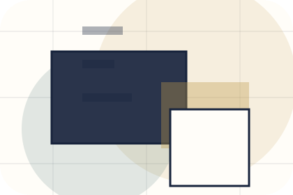
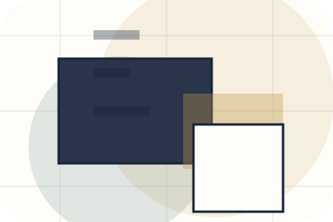
The uncertainty, delay, or missed opportunity visitors bring into cases.
Work / 07
Outcomes shows what changes after the work: clearer decisions, visible progress, and proof points that connect the offer to real outcomes.
The layout connects before-and-after thinking with measured outcomes, making the result easy to scan without promising what the business cannot guarantee.
Explore WorkThe uncertainty, delay, or missed opportunity visitors bring into outcomes.
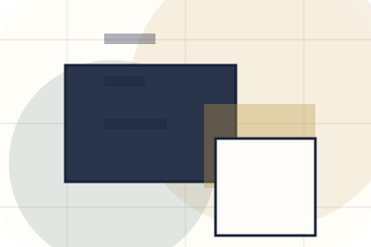
The clearer, safer, or more valuable state Brand is designed to support.
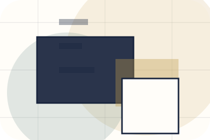
The visible cue that connects outcomes to a believable decision, not a loose claim.
Work / 08
Links adds editorial context to the work route, using the author essay and media system structure to support authority and booking confidence before visitors choose a next step.
Brand uses essay media cards and focused copy to make the decision easier to scan, aligning the section with authority and booking confidence rather than filling space.
Explore WorkLinks gives the page a specific angle instead of repeating the navigation label.
The essay media cards show what to compare, what to avoid, and what matters most for personal brands, creators & public figures visitors.
The final cue points to a useful internal route so the section keeps the journey moving.
Work / 09
Featured adds editorial context to the work route, using the author essay and media system structure to support authority and booking confidence before visitors choose a next step.
Brand uses essay media cards and focused copy to make the decision easier to scan, aligning the section with authority and booking confidence rather than filling space.
Explore WorkFeatured gives the page a specific angle instead of repeating the navigation label.
The essay media cards show what to compare, what to avoid, and what matters most for personal brands, creators & public figures visitors.
The final cue points to a useful internal route so the section keeps the journey moving.
Work / 10
Brand closes the work route with a clear action, a quick reminder of the value, and a low-friction way to book an appearance.
Visitors who are ready can use the primary action. Visitors who are still comparing can scan the section links, proof, and support routes before they book an appearance.
Book AppearanceThe final block keeps the choice simple: act now, compare one more proof route, or send enough detail for a focused response.
Book Appearanceauthority and booking confidence
A personal brand site with editorial essay rhythm, speaking/media cards, newsletter conversion, and booking clarity. Work ends with a direct path to book an appearance, plus enough context for visitors who still need to compare.
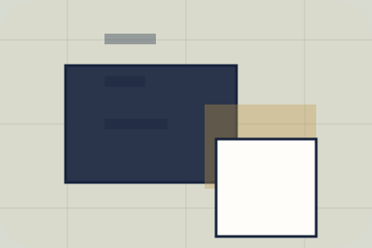
Book AppearanceInformation is provided for planning and should be reviewed for the final client, location, and operating rules.